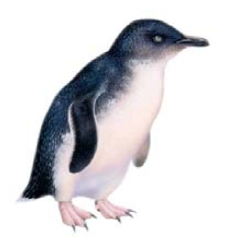
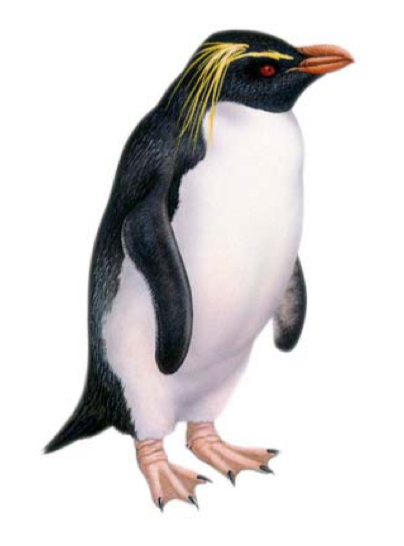
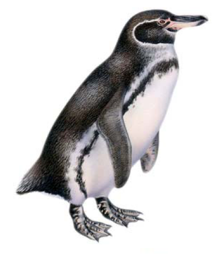
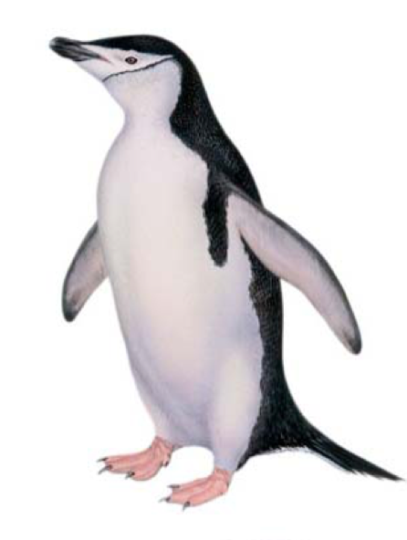
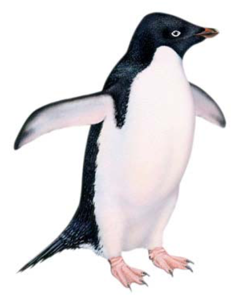
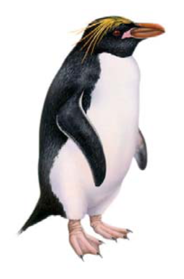
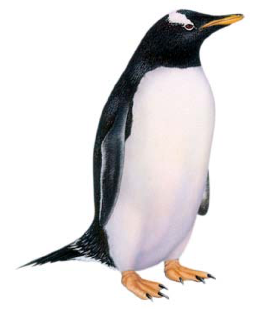
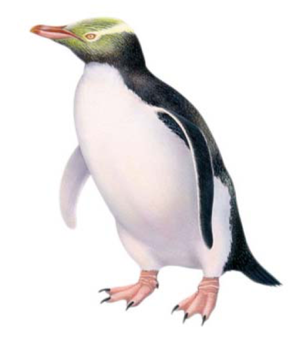
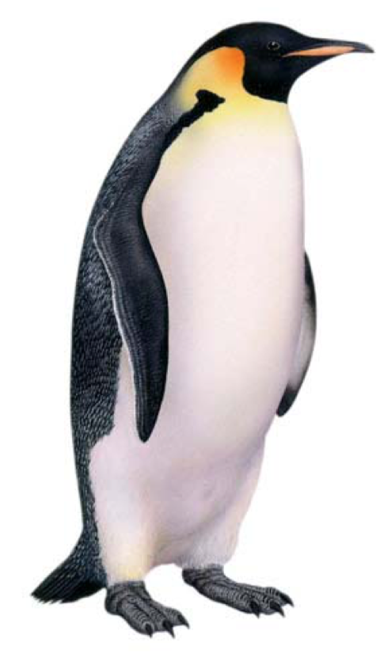

The number of recognized species is controversial. For most scientists, there are 17 types of penguin divided into six genera, but some others classify some species as subspecies or just group them in a different way according to their geographical location.
Below you will learn about some of the most popular penguin species from all over the world.
Little Blue Penguin
 Eudyptula minor
Standing height: 10-12 inches
Weight: 2-3 pounds
Home: Australia and New Zealand. The inshore habits of this species have caused isolated groups to evolve into 6 recognized subspecies.
Stable population estimated at 700,000-1,200,000 birds.
The little blue penguin is the smallest species of penguin in the world and is found exclusively in Australia and New Zealand. This penguin employs a wide range of songs more extensively than any other penguin species. From an evolutionary standpoint, the little penguin is also considered the most primitive.
Rockhopper Penguin
 Eudyptes chrysocome
Standing height: 18- 23 inches
Weight: 4.5-8 pounds
Home: Breed on rocky islands located in the sub-Antarctic and south temperate regions of the Indian and South Atlantic oceans. Great distances between these island groups have resulted in the evolution of three subspecies.
All three rockhopper subspecies are considered vulnerable.
Northern rockhopper: 700,000 adults, Southern rockhopper: 950,000 adults,
Eastern rockhopper: 1,664,000 adults
The name rockhopper describes the way this species hops around the steep, rocky places where they live for part of the year.
Galapagos Penguin
 Spheniscus mendiculus
Standing height: 21 inches
Weight: 5-6 pounds
Home: Lives year-round on the Galapagos Islands of Fernandina and Isabela, 600 miles west of Ecuador.
Endangered population estimated between 3,000 and 8,000 birds
This penguin is a truly tropical weather penguin, living on the hot desert islands of the Galapagos at the equator—making it the most northerly penguin species. Temperatures often exceed 100 degrees in this region.
Chinstrap Penguin
 Pygoscelis antarctica
Standing height: 28-30 inches
Weight: 8.5-9.5 pounds
Home: Circumpolar, breeding south of the Antarctic convergence on islands and on the Antarctic peninsula
Lower risk population estimated at 15,000,000 birds.
The chinstrap penguin is the second-most numerous penguin in the world. This penguin belongs to a group of penguins known as the brush-tailed or stiff-tailed penguins.
Adélie Penguin
Pygoscelis adeliae
Standing height:b 18-24 inches
Weight: 8-10 pounds
Home: circumpolar on Antarctic continent and the surrounding waters within limits of pack ice
Lower risk population estimated at 4,931,600 birds
The Adelie penguin is the characteristic “tuxedo” penguin of Antarctica.
This species, along with the emperor penguin, is restricted to Antarctica and the surrounding waters.
Macaroni Penguin
Eudyptes chrysolophus
Standing height: 28 inches
Weight: 9-13 pounds
Home: Spends 75% of its time at sea. Breeds on steep, rocky sub-Antarctic islands close to the Antarctic convergence in the South Atlantic and Indian oceans, with one breeding colony located on the Antarctic peninsula
Vulnerable populations estimated at 18,000,000 to 23,000,000 birds
The name macaroni describes their yellow crest feathers, which resemble an eighteenth century hat fashion worn by young Englishmen. Macaronis are the largest crested penguin. They breed closer to Antarctica than any other crested penguin, and even have one breeding colony on the Antarctic peninsula.
Gentoo Penguin
Pygoscelis papua
Standing height: 30-35 inches
Weight: 10-14 pounds
Home: Around the globe on sub-Antarctic islands and the Antarctic peninsula
Lower risk population estimated at 628,000 birds
The gentoo penguin belongs to a group of penguins commonly known as brush-tailed penguins, which also include the Adelie and chinstrap penguins. The gentoo is the most timid of the three.
Yellow-Eyed Penguin
Megadyptes antipodes
Standing height: 21 inches
Weight: 11.5-13 pounds
Home: Southeast coast of New Zealand’s South Island, including Stewart, Campbell and Auckland Islands
Vulnerable population estimated at 4,000-7,000 birds. Population has decreased by 40% over the last 40 years.
The yellow-eyed penguin is the most reclusive of all penguin species. These penguins seek out sheltered nests completely isolated from their neighbors. In fact, if two pairs are within sight of each other, both will experience an unsuccessful breeding season.
Emperor Penguin
Aptenodytes forsteri
Standing height: 36-44 inches
Weight: 60-90 pounds
Home: Marine, circumpolar, within the Antarctic zone, approximately 40 colonies scattered around Antarctica, most on fast ice
Lower risk population estimated at 436,200 birds
The emperor penguin is the largest of all penguins. This penguin endures the harshest weather of any species on the planet.